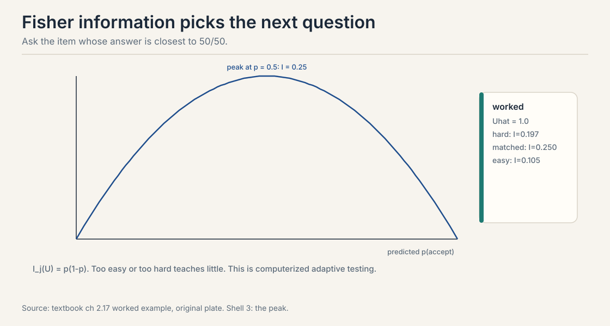
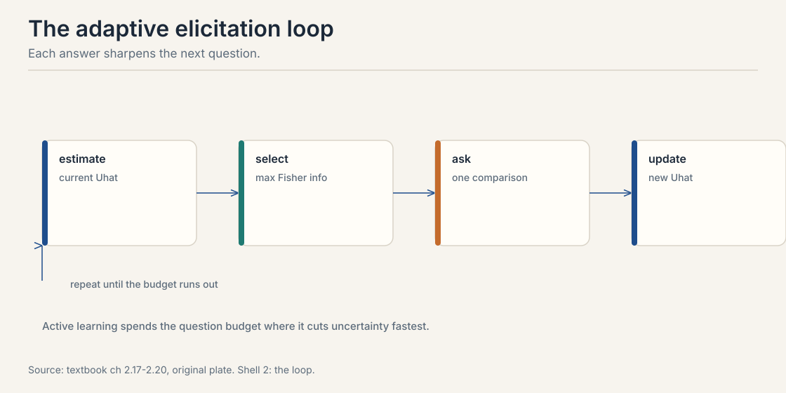
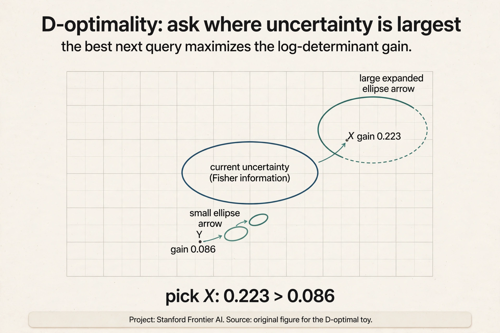
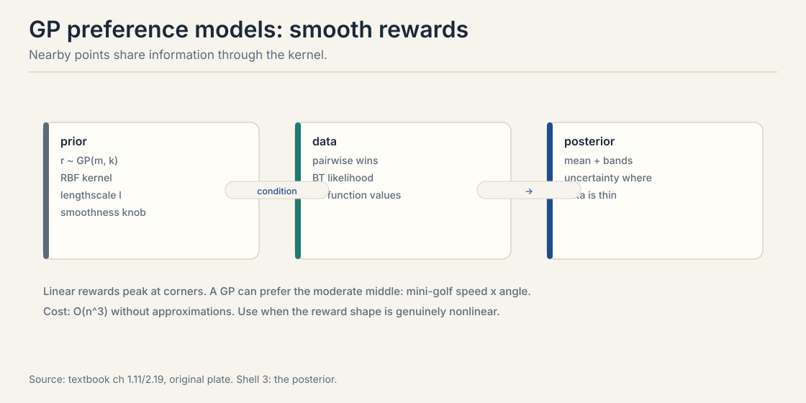

Lecture 5: Metric Elicitation, Asking the Best Questions
Video blocked (ad-blocker or local file mode).
Watch on YouTubeVideo not loading? Watch on YouTube
External explainer (not the course lecture): Roboflow CEO Joseph Nelson on active learning as an iterative process. Verified live on YouTube.
The problem: questions cost money
Every label in this course costs an annotator’s time and attention. A preference dataset of 100,000 pairs is 100,000 paid judgments. Lectures 2 through 4 assumed the pairs arrive. This chapter asks which pairs to buy. Random pairs waste the budget on questions whose answers you can already predict. The goal: pick the queries that shrink your uncertainty fastest.
The key tool is Fisher information. For a parameter theta, it measures how much one observation reveals about theta. Higher information means tighter estimates from fewer questions. The Cramer-Rao bound makes this precise: no unbiased estimator beats the inverse information. Information is the currency. Spend it well.
First attempt: ask random pairs
The naive pipeline samples pairs uniformly and labels them all. It works. It is also wasteful in a way you can measure. Suppose your current model says A beats B with probability 0.95. You pay for the label. The annotator says A, as expected. What did you learn? Almost nothing. The answer was predictable. The budget is gone anyway.
The waste has a number. For a Bernoulli observation with success probability p, the Fisher information about the underlying parameter is:
I = p * (1 - p)
Work it at three values.
p = 0.90: I = 0.90 x 0.10 = 0.09 p = 0.50: I = 0.50 x 0.50 = 0.25 p = 0.10: I = 0.10 x 0.90 = 0.09
The 50/50 question carries 0.25 units of information. The predictable question carries 0.09. One well-chosen question is worth nearly three wasted ones. Random sampling spends most of the budget near 0.09. That is the failure, demonstrated.
The key question
If information peaks at 50/50, can we choose each question to sit at the current edge of our knowledge?
The 50/50 rule, worked
Take the Rasch model from Lecture 1. A candidate item j has acceptance probability p_j(U) = sigma(U + V_j) for a user of ability U. The Fisher information about U from one response is p_j(1 - p_j): the downward parabola from above, maximized at p = 0.5. The most informative item is the one the user gets right half the time. Too easy teaches nothing. Too hard teaches nothing.

Worked example from the textbook. Estimated ability U-hat = 1.0. Three candidate items: hard (V = -2.0), matched (V = -1.0), easy (V = 1.0).
hard: p = sigma(1.0 - 2.0) = sigma(-1.0) = 0.269, I = 0.197 matched: p = sigma(1.0 - 1.0) = sigma(0.0) = 0.500, I = 0.250 easy: p = sigma(1.0 + 1.0) = sigma(2.0) = 0.881, I = 0.105
Ask the matched item. Its difficulty, -V_j = 1.0, equals the ability estimate. This is the principle behind computerized adaptive testing: the SAT and GRE pick each question to sit at your estimated level. Every question is a 50/50 bet against your current belief.
Fisher information for a Bernoulli response is p(1-p), which peaks at p = 0.5 with value 0.25. A question the user always gets right or always wrong has information near zero: the answer was predictable. The 50/50 question splits the posterior most evenly, so the answer moves your estimate the most. You ask at the wrong difficulty. Overestimate the user and every question looks hard: answers are near-deterministic failures, information collapses. The fix is the adaptive loop below: re-estimate after each answer so the difficulty tracks the improving estimate. Early questions should hedge across difficulties.
The adaptive loop
One good question is not enough. Chain them.

- Estimate. Current best guess of the parameter.
- Select. The candidate query with max Fisher information.
- Ask. Get the human’s answer.
- Update. Refit the estimate with the new data.
Repeat until the budget runs out. Each answer sharpens the next question. The loop is greedy: it maximizes immediate information, not the optimal sequence. Greedy is near-optimal here and far simpler than planning the whole sequence.
Because answers change the plan. A surprising answer moves the estimate, which changes which question is most informative next. Pre-planned sequences cannot adapt. The greedy loop re-optimizes after each answer, which is why adaptive testing beats fixed forms with the same number of questions. When information is complementary: two questions together reveal more than the sum of their separate gains. Greedy picks the best single question and can miss synergistic pairs. In practice the loss is small for smooth parametric models, and the textbook’s D-optimal simulations show greedy active selection beating random selection clearly.
From one parameter to many: D-optimality
So far the parameter was one user’s ability. Now learn a shared weight vector W over item features: V_j = W^T X_j. The pair probability is sigma(W^T (X_j - X_k)): logistic regression on feature differences.
The Fisher information becomes a matrix. Each query adds a rank-one update scaled by p(1-p). The 50/50 rule survives inside the matrix: uncertain pairs contribute more. The selection criterion is D-optimality: pick the pair maximizing the log-determinant gain of the precision matrix.
logdet(Lambda + w x_jk x_jk^T) - logdet(Lambda), w = p(1-p)
D-optimality maximizes the information volume: it shrinks the posterior ellipsoid fastest in all directions at once. The textbook simulates this: 50 items, 5 features, 100 queries. Active D-optimal selection beats random pairs on estimating W. The margin is the payoff of the whole chapter.
Subchapter: D-optimality, drawn and worked
Picture the posterior over W as an ellipse. Wide in a direction means uncertain about that direction. Each query adds information along its feature-difference direction x_jk, scaled by w = p(1-p). The ellipse shrinks along that direction. The D-optimal query is the one that shrinks the ellipse’s volume the most: maximize the log-determinant gain.

Work it in 2-D. Posterior precision Lambda = I, the identity: the ellipse is a circle. Two candidate queries. Query 1 has direction x = (1, 0) and p = 0.5, so w = 0.25. By the matrix determinant lemma, the logdet gain is log(1 + w * x^T Lambda^{-1} x) = log(1 + 0.25 * 1) = log(1.25) = 0.223. Query 2 has direction (0.71, 0.71) and p = 0.9, so w = 0.09: gain = log(1 + 0.09 * 1) = 0.086. Query 1 wins by a factor of 2.6. The 50/50 rule survives inside the matrix: the uncertain pair contributes more, and the direction matters too. A query along an already-precise direction adds little even at 50/50, because x^T Lambda^{-1} x is small there.
Asking well for flexible models
Parametric models have Fisher information. Gaussian processes have posterior variance, which varies across the input space: high far from data, low near it. The acquisition function for a candidate query Q = (x_A, x_B) is the expected information gain about the reward function:
a(Q) = H(y | D, Q) - E_r[H(y | r, Q)]
Two terms. Predictive entropy: how uncertain is the outcome under the current model? High when p(A beats B) is near 0.5. Expected conditional entropy: how uncertain would the answer be even knowing the true reward? Low for clean comparisons, high for inherently noisy ones.
The rule: ask where the model is uncertain but a human could answer clearly. Skip queries where the model is certain, waste, and queries where even the truth is noisy, unanswerable.

The textbook also sketches active DPO: DPO trains billion-parameter policies, so exact Fisher information is intractable. The ADPO algorithm approximates the policy locally and selects pairs by approximate information gain. The principle is unchanged. The computation is approximate.
Subchapter: the GP acquisition, worked with numbers
The formula has two terms. Work them on three candidate queries so the rule becomes mechanical. All entropies use the natural log. The posterior over the reward gap g = r_A - r_B is Gaussian in each case, and the expected conditional entropy is computed by Monte Carlo over that Gaussian.
Query 1. The model says p(A beats B) = 0.6. The gap posterior is Normal(0.4, 0.5^2): the human is fairly reliable.
predictive entropy: H = -0.6 ln 0.6 - 0.4 ln 0.4 = 0.673 expected conditional: E_r[H(sigma(g))] = 0.648 acquisition: a(Q) = 0.673 - 0.648 = 0.025
Query 2. The model says p = 0.5, maximally uncertain. The gap posterior is Normal(0, 1.5^2): the human is noisier, but still informative.
predictive entropy: H = 0.693 (the binary maximum) expected conditional: = 0.528 acquisition: a(Q) = 0.693 - 0.528 = 0.165
Query 3. The model says p = 0.95, nearly certain. The gap posterior is Normal(3.0, 0.3^2): the human is reliable.
predictive entropy: H = 0.199 expected conditional: = 0.194 acquisition: a(Q) = 0.199 - 0.194 = 0.004
Query 2 wins at 0.165. Read why. Query 3 is wasted: the model already knows the answer, so even a perfectly reliable human adds 0.004. Query 1 is middling: the model is somewhat uncertain, but the human’s answer was largely predictable given the gap posterior, so little is gained. Query 2 is where the model is maximally uncertain and the human still carries signal. The two terms pull in opposite directions and the difference picks the winner. That is the whole rule: uncertain model, answerable question.
The metric is the unknown
Every section so far assumed the target is fixed. Fisher information, the 50/50 rule, D-optimality: all of them pick which questions to ask. None of them asks which metric the model should optimize. Yet every quoted metric encodes a tradeoff. Accuracy at prevalence pi is the linear metric with weights (pi, 1 - pi). The team that tunes to a quoted metric has guessed the tradeoff, usually without noticing.
Make it concrete. An emergency department builds a sepsis classifier. A missed case can kill. A false alarm costs a nurse twenty minutes. Two candidate models finish tuning.
C1: TP = 0.98, TN = 0.30 (catches almost everything, alarms constantly) C2: TP = 0.85, TN = 0.75 (balanced)
The team quotes a weighted metric with weights (0.9, 0.1). It is a guess, written down. C1 scores 0.9 x 0.98 + 0.1 x 0.30 = 0.912. C2 scores 0.9 x 0.85 + 0.1 x 0.75 = 0.840. C1 ships.
The doctors’ true tradeoff is (0.8, 0.6): sensitivity matters more, but false alarms still cost. C1 scores 0.8 x 0.98 + 0.6 x 0.30 = 0.964. C2 scores 0.8 x 0.85 + 0.6 x 0.75 = 1.130. The doctors would rather deploy C2. The quoted metric picked the wrong model. The failure is not bad tuning. It is a guessed metric.
The key question, restated for this half: what if the metric itself is the unknown, and we elicit it from pairwise comparisons the way we elicit preferences?
The textbook calls this metric elicitation. A linear performance metric (LPM) has the form:
phi(C) = m_11 x TP + m_00 x TN + m_0
The weights (m_11, m_00) encode the tradeoff between true positives and true negatives. Only their ratio matters: scaling all three weights by a positive constant keeps every ranking the same. So parametrize m = (cos theta, sin theta). One angle, theta, is the whole metric. For medical diagnosis, m_11 > m_00 weights sensitivity, catching disease, over specificity, avoiding false alarms. For spam filtering the reverse may hold. The practitioner’s implicit metric m* is unknown. The task is to learn it from pairwise comparisons of classifiers.
The structure that makes this tractable is quasiconcavity. The textbook’s Proposition 2.3: for a quasiconcave LPM phi that is monotonically increasing in TP and TN, with rho^+(theta) a parametrization of the upper boundary of the confusion-matrix space, the composition phi o rho^+ is quasiconcave and unimodal on [0, pi/2]. Quasiconcave means a single peak. No local maxima can trap the search. That is what upgrades the problem from gradient descent to binary search.
Subchapter: the binary search, worked
The textbook’s algorithm searches theta on [0, pi/2] with an oracle that compares classifiers. Each iteration splits the interval into four equal parts with boundaries A, B, C, D, E, computes the confusion matrix of the classifier at each boundary, and asks the oracle to compare the adjacent pairs: 4 queries. The peak’s position decides which half to keep. Each iteration halves the interval. The query complexity is O(log(1/epsilon)): exponentially better than the O(1/epsilon^2) rate for general 2-D estimation.
Work one iteration. The doctors’ true metric is m = (0.8, 0.6). Check the angle: cos theta = 0.8 gives theta = 0.6435 rad = 36.87 degrees, and sin(0.6435) = 0.6. The five boundary classifiers, each tuned at its own theta, post these validation rates:
boundary theta m = (cos, sin) classifier (TP, TN) oracle score 0.8xTP + 0.6xTN A 0 (1.0000, 0.0000) (0.98, 0.30) 0.964 B 0.3927 (0.9239, 0.3827) (0.93, 0.50) 1.044 C 0.7854 (0.7071, 0.7071) (0.85, 0.75) 1.130 D 1.1781 (0.3827, 0.9239) (0.70, 0.88) 1.088 E 1.5708 (0.0000, 1.0000) (0.55, 0.96) 1.016
The 4 oracle queries compare adjacent pairs. A vs B goes to B: 1.044 > 0.964. B vs C goes to C: 1.130 > 1.044. C vs D goes to C: 1.130 > 1.088. D vs E goes to D: 1.088 > 1.016. The peak sits at C, so the maximum lies in [B, D] = [0.3927, 1.1781]: half the original [0, 1.5708]. The true theta* = 0.6435 sits inside. The midpoint estimate after one iteration is theta-hat = 0.7854, within 0.14 rad of truth, at a cost of 4 queries.
Count the queries to tolerance epsilon = 0.01 rad. The interval starts at pi/2 = 1.5708. log2(1.5708 / 0.01) = 7.3, so 8 iterations, 32 queries total. The general 2-D rate would need on the order of 1/epsilon^2 = 10,000. Thirty-two against ten thousand: the single peak is the whole saving.
Map back. Each property answers a named pain.
| Pain | Answer | How |
|---|---|---|
| The tradeoff is tacit, and nobody can state m_11, m_00 | Learn the weights from pairwise classifier comparisons | Doctors already compare A vs B, and the algorithm turns those comparisons into theta |
| Metric search could stall in a local optimum | Quasiconcavity gives one peak | Binary search, no gradients, no traps |
| Elicited weights are not a deployable model | The Bayes-optimal classifier falls out | h-bar(x) = 1[eta(x) >= m_00/(m_11 + m_00)], where eta(x) is the posterior probability that x is a positive case. At (0.8, 0.6) the threshold is 0.43, not 0.5 |
The honest price. The oracle is expensive: each query is an expert comparing two classifiers on the same validation cases. Quasiconcavity is an assumption: the metric must increase monotonically in TP and TN, and the textbook’s guarantee needs it. Only ratios are learned: the angle theta, never the absolute scale. That is enough for thresholds but not for absolute scores. Linear metrics have a ceiling: the F-beta score (the weighted harmonic mean of precision and recall, where precision is TP among predicted positives and recall is TP among actual positives) and Jaccard similarity (the intersection over union of predicted and actual positives) are linear-fractional, phi(C) = (p_11 x TP + p_00 x TN + p_0)/(q_11 x TP + q_00 x TN + q_0). The textbook’s extension runs two binary searches, one for the maximizer and one for the minimizer of the implicit linear numerator, then solves for the fractional parameters, still O(log(1/epsilon)). Multiclass runs the binary search over each pair of classes: diagonal linear metrics psi(d) = sum_k a_k d_k cost O(K^2 log(1/epsilon)). Ten classes give C(10, 2) = 45 pairs, and each pair costs the worked 32 queries, so about 45 x 32 = 1,440 queries at epsilon = 0.01.
Pairwise comparisons give orderings, not gradients. The oracle says C beats B, never by how much in theta. Quasiconcavity turns orderings into interval halving: each adjacent comparison rules out one side of the peak. Four queries per iteration, and each iteration halves the interval. Gradient methods would need a differentiable oracle, which a human expert is not. The single-peak guarantee fails. Binary search can discard the half that holds the global maximum, and the returned theta-hat is wrong. The honest move is the same insurance as this lesson’s random stream, a stream of unselected random comparisons kept as a reality check: keep some unselected comparisons, and re-examine the metric when they disagree with the elicited one.
Mapping back: what active selection buys
| Random-sampling pain | Active answer | How |
|---|---|---|
| Budget spent on predictable answers | Ask at 50/50 | I = p(1-p) peaks at 0.25. predictable pairs sit near 0.09 |
| Fixed forms cannot react | Adaptive loop | Re-estimate after each answer. difficulty tracks belief |
| Many parameters, one rule | D-optimality | Max logdet gain shrinks the ellipsoid in all directions |
| Flexible models, no Fisher matrix | Information gain | Ask where the model is uncertain but the human is clear |
The honest price: selection can bias
Active selection is not free. The queries it picks are not a random sample, so naive estimators on actively collected data can be biased. Greedy selection can miss complementary question pairs. And the whole scheme assumes the model is right: if the BT model is misspecified, the “most informative” query under a wrong model teaches the wrong thing efficiently. Active learning amplifies model errors as well as model gains. The textbook’s remedy: keep a stream of random queries as a reality check, and re-examine the model when the active stream disagrees with it.
Take the estimated ability U-hat = 1.0 and three candidate items with difficulties -V_j of 2.0 (hard), 1.0 (matched), -1.0 (easy). Step one: compute each acceptance probability. Hard: sigma(1.0 - 2.0) = sigma(-1.0) = 0.269. Matched: sigma(0) = 0.500. Easy: sigma(2.0) = 0.881. Step two: compute I = p(1-p) for each. Hard: 0.269 x 0.731 = 0.197. Matched: 0.25. Easy: 0.881 x 0.119 = 0.105. Step three: pick the max. The matched item wins with 0.250, worth 2.4 times the easy item. The rule in one line: ask the question the user gets right half the time. Break the tie by coverage: pick the item whose feature direction is least explored so far, the D-optimal tiebreak. Or pick randomly between them. Ties are rare with continuous difficulties and harmless either way: both questions are near-optimal.
Do not spend it all on random pairs. Reserve 2,000 labels as a random stream: the reality check that catches model misspecification. Spend the other 8,000 adaptively. Start with 1,000 random pairs to fit an initial BT reward model. Then loop: score candidate pairs by expected information gain under the current posterior, label the top batch, refit. Weight sampling toward pairs near 50/50 under the current model. Stratify prompts across task types so no category starves. Track held-out pairwise accuracy as the spend progresses. when it plateaus, stop early and bank the remainder. The failure to avoid: spending the whole budget up front on random pairs, which the lesson’s arithmetic shows wastes roughly two thirds of the information. Compare against the random stream. Fit the model on the adaptive labels and on an equal-sized random subset, and evaluate both on a held-out set drawn randomly. If the adaptive fit wins, the selection is buying real information. If the random fit wins, the selection is chasing the model’s own errors. Also watch for distribution shift: the adaptive stream oversamples hard pairs, so always evaluate on random pairs, never on the selected ones.
It says no unbiased estimator can be more precise than the inverse Fisher information allows. If one observation carries I = 0.25 units of information, then n observations give you at most n x 0.25, and your estimator’s variance cannot go below 1/(0.25n). It is a speed limit on learning. The practical use: it converts the information numbers into sample sizes. Want the standard error halved? You need four times the information, which means four times the well-chosen questions, or twelve times the wasted ones at I = 0.09. No, only to unbiased ones. Regularized estimators trade bias for variance and can beat the bound on mean squared error. The bound still sets the intuition: information is the currency, and biased estimators spend it differently, not freely.
When questions are complementary: two questions together reveal more than the sum of their separate gains. Example: two items whose difficulties bracket the ability estimate from above and below. Each alone is mildly informative. Together they pin the estimate from both sides, and the pair beats any two independent greedy picks. In practice the loss from greedy is small for smooth parametric models, and the textbook’s simulations show greedy active selection beating random clearly. Plan pairs only when you have a concrete complementarity story. otherwise the greedy loop wins on simplicity. Yes: Bayesian optimal experimental design over sequences, maximizing expected terminal information. It is intractable beyond tiny horizons: the decision tree branches on every possible answer. Approximations exist, lookahead with sampling, but the textbook’s verdict stands: greedy is near-optimal here and far simpler. Spend the complexity budget on a better model, not a better planner.
The random stream is the control group of your elicitation experiment. Active selection optimizes under the current model. if the model is wrong, the selection efficiently teaches the wrong thing. Random queries are model-free: they estimate the truth without the selection filter. Size it at 10 to 20 percent of the budget. That is enough to detect a disagreement between the active and random estimates without wasting the budget’s main force. If the two streams disagree, trust the random one and fix the model. The stream is insurance, and like all insurance it looks wasteful until the day it pays. Partly. A fixed validation set checks the final model, but it does not check the selection process while it runs. The stream’s value is temporal: it catches the model going wrong mid-budget, when you can still redirect the spend. A post-hoc validation set only tells you after the money is gone.
Recap: the whole lesson on one screen
The story in eight steps. Each step answers the one before it.
- Questions cost. Each label is an annotator’s time. Random pairs spend it on predictable answers.
- Information is measurable. I = p(1-p). The 0.9 question carries 0.09. The 0.5 question carries 0.25. Nearly 3x the value.
- Ask at 50/50. Match difficulty to the current estimate. The toy: hard 0.197, matched 0.250, easy 0.105. The SAT and GRE run this rule.
- Loop it. Estimate, select, ask, update. Greedy is near-optimal and far simpler than planning ahead.
- Many parameters: D-optimality. Max the logdet gain. Shrink the ellipsoid in all directions. 50 items, 5 features, 100 queries: active beats random.
- GPs use information gain. Predictive entropy minus expected conditional entropy. Uncertain model, clear human.
- Active DPO approximates. Billion parameters break exact Fisher. Approximate locally, select greedily.
- The price is bias. Selected queries are not random. Keep a random stream. A wrong model teaches the wrong thing fast.
Go deeper
- Active Learning and Iterative Improvement (Roboflow): https://www.youtube.com/watch?v=eAtBuZHTl40
- Course textbook (Truong, Haupt, Koyejo): https://mlhp.stanford.edu/Machine-Learning-from-Human-Preferences.pdf
- Chaloner and Verdinelli (1995): Bayesian experimental design, the information-gain reference.
Official sources and further reading
Official: - Active Learning and Iterative Improvement (external explainer, video id eAtBuZHTl40): the iterative active-learning loop in production. - Course textbook, chapters 2.17-2.20: Fisher information, the 50/50 rule, the adaptive loop, D-optimality, GP acquisition, ADPO. link
Further reading: - Chaloner and Verdinelli (1995): the Bayesian experimental design reference behind the information-gain rule.
Caveats from these sources. The 50-item, 5-feature, 100-query simulation is the textbook’s illustration. The Cramer-Rao bound applies to unbiased estimators. regularized estimators trade bias for variance. ADPO is sketched in the textbook, not derived in full.
Connections to the other courses
- CS329H L01: the Rasch model whose p(1-p) starts the chapter.
- CS329H L04: the posterior variance from Bayes is what active selection spends.
- CS329H L06: the same information rule picks duels in preferential Bayesian optimization.
- CS329H L07: active DPO selects pairs for the alignment loop.
- CS329H L09: annotation budgets are mechanism design. elicitation and incentives are one story.